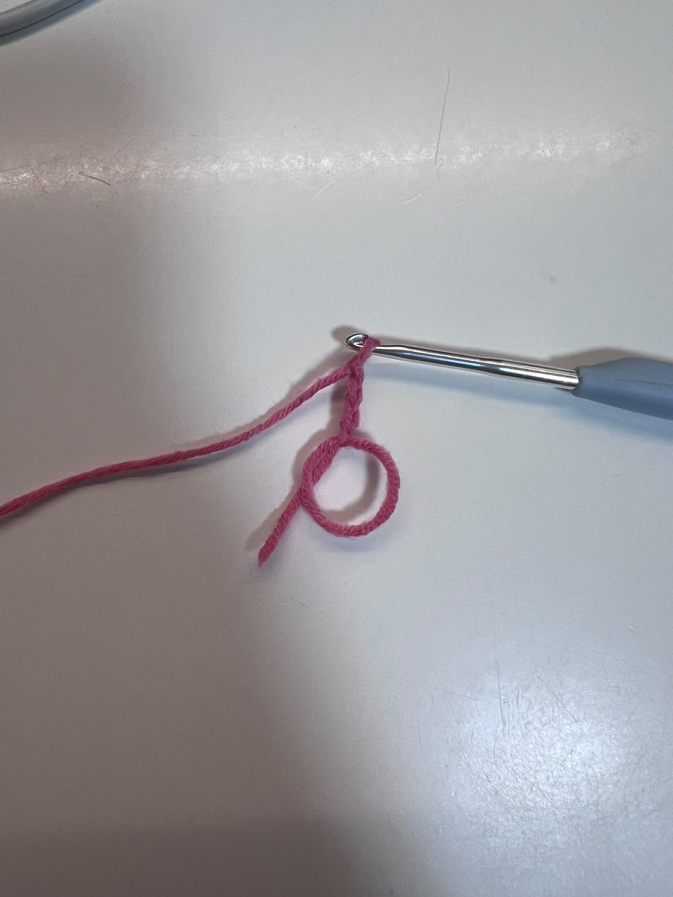
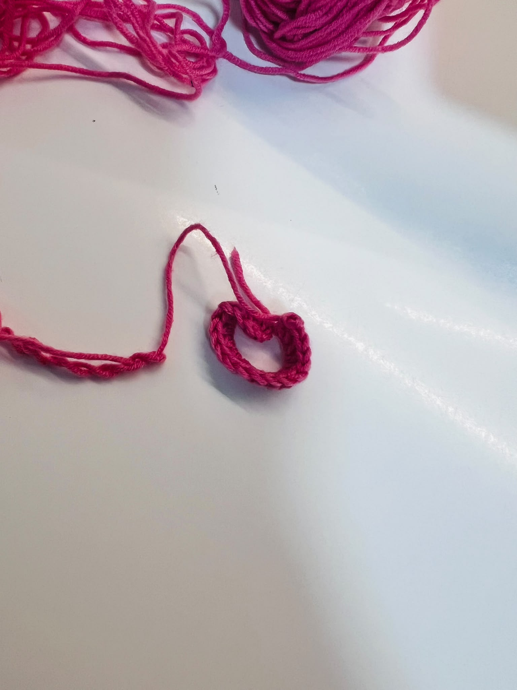
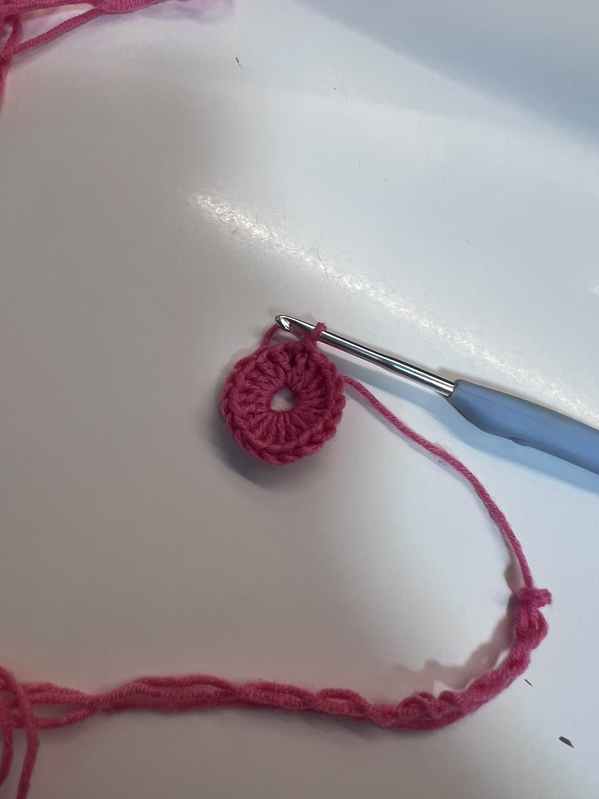
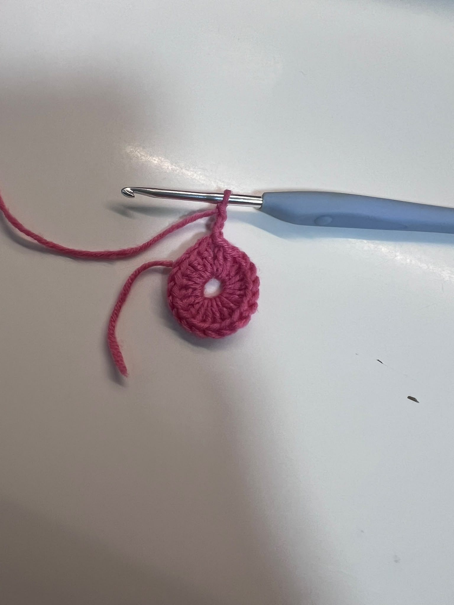
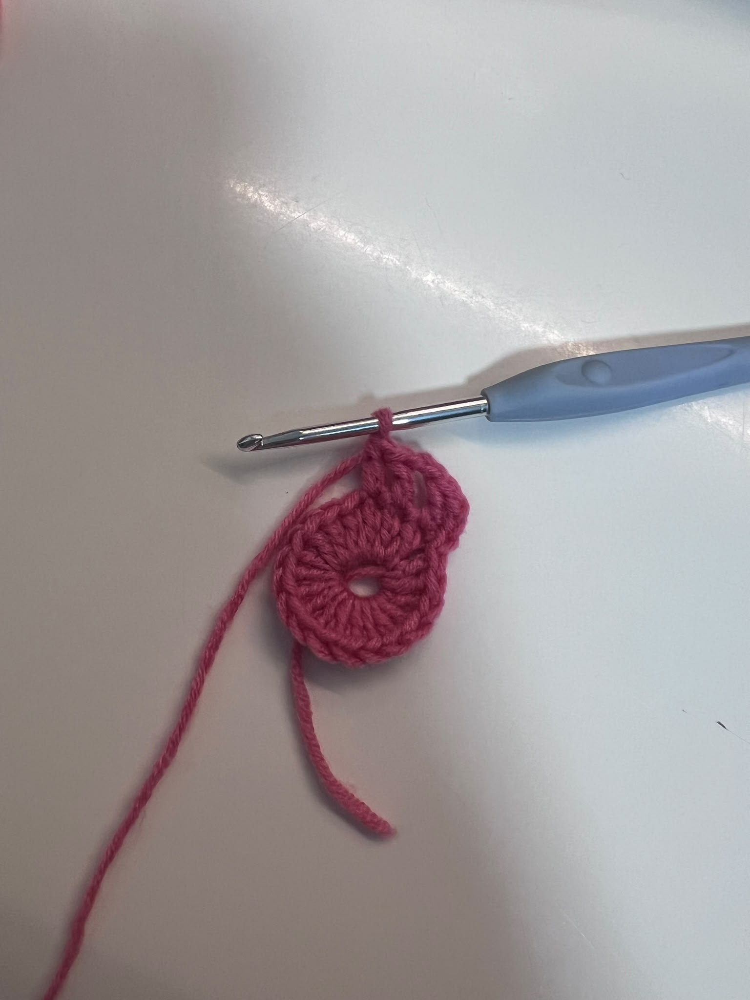
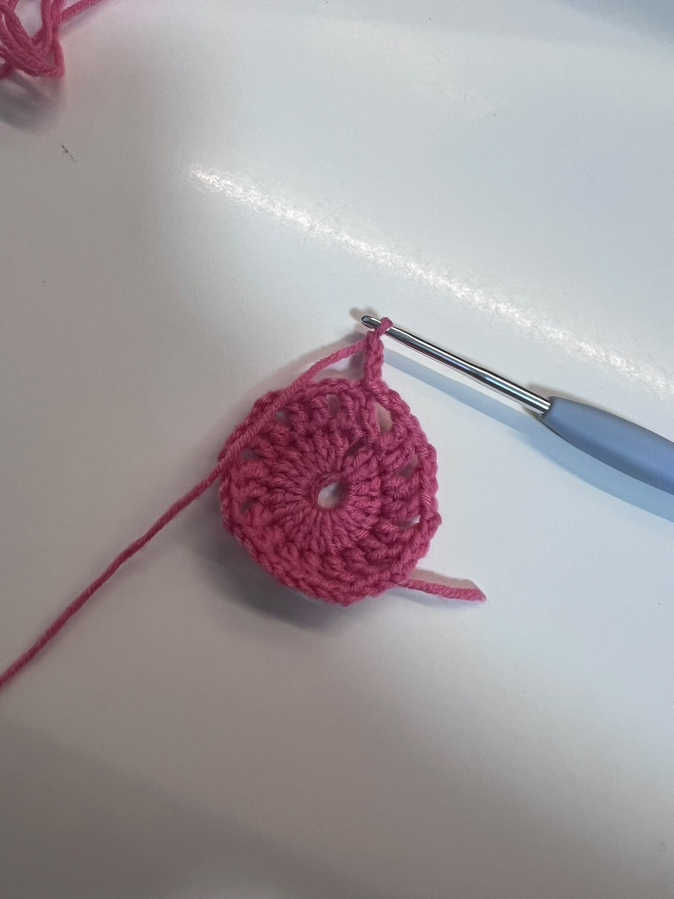
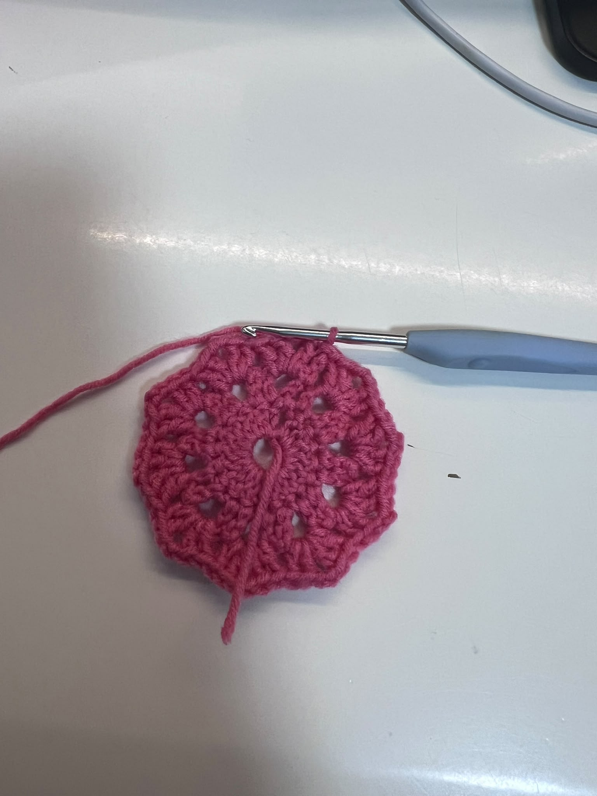

Crochet Coaster
Estimated Time: 30 Mins - 1 Hour
Materials Needed
- 4mm Crochet Hook
- Cotton Yarn (Main Flower Colour)
- Cotton Yarn (Centre Colour)
- Yarn Needle
- Scissors
- Stitch Marker (Optional)
Abbreviations
- MR = Magic Ring
- ch = Chain
- sc = Single Crochet
- hdc = Half Double Crochet
- dc = Double Crochet
- sl st = Slip Stitch
- FO = Fasten Off
Pattern Instructions (Coaster)

Step 1 (Coaster Centre)
Start with a magic ring (MR).
Chain 3 from the MR

Step 2
Dc 19 around the ring

Step 3
Ch 3, 2 dc, ch 2, 2 dc until the end then sl st

Step 4
Adjust each part with your fingers.
Ensure the coaster lies flat before fastening off.

Step 5
Add a round of single crochet for a neater finish.
Slip stitch to join the round.

Step 6 (Finish Off)
Fasten off the yarn.
Use a yarn needle to weave in all loose ends securely.

Step 7 (Finished Coaster)
Your crochet coaster is now complete!
Make several in different colours to create a matching coaster set.